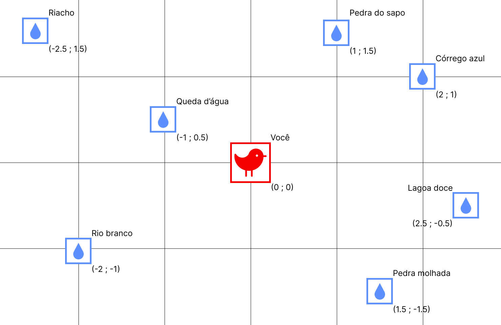
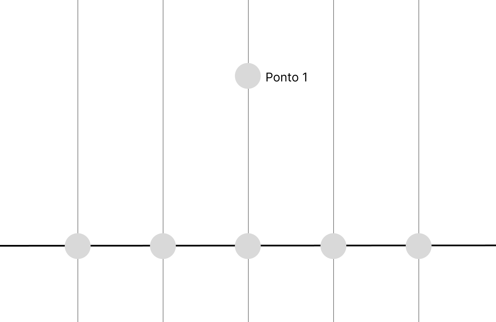
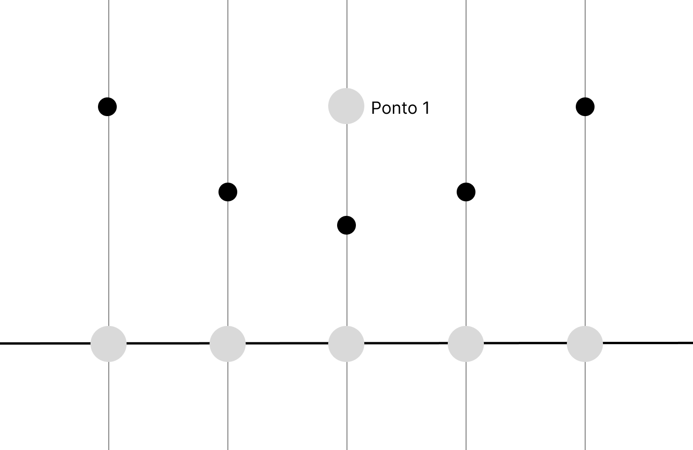
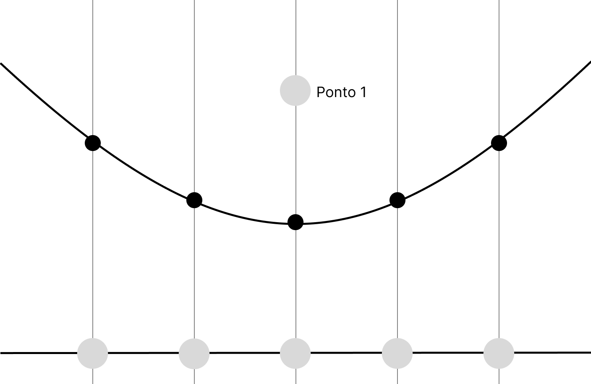

Imagine que você é um pássaro!
Você está voando o dia todo e não conseguiu beber nenhum gole de água. Por sorte, você sabe que ao seu redor, num raio de poucos quilômetros, existem algumas fontes de água. Aqui está o mapa da floresta:
Cada caixinha azul é um ponto de água diferente.
Aviso
Como sabemos qual ponto de água mais próximo de você?
Métodos de localização:
Método das distâncias
Você sabe sua posição e a posição das fontes de água ao seu redor pois você é um pássaro e seu senso de localização é ótimo! (quase um GPS biológico).

É possível calcular todas as distâncias entre os você e cada um dos pontos utilizando o teorema de pitágoras.
Pergunta
Tente encontrar o menor valor entre eles:
Resposta
O arquivo dist_m1.py calcula todas essas distâncias e imprime seus valores.
Lugar
Distância
Queda d’água
1.12 km
Riacho
2.92 km
Pedra do sapo
1.80 km
Córrego azul
2.24 km
Rio Branco
2.24 km
Pedra molhada
2.12 km
Lagoa doce
2.55 km
O ponto d’água mais próximo seria a Queda d’água com 1.12km de distância
É notável que essa tarefa não é muito eficiente. E, se saíssemos da mesma posição, precisaríamos calcular todas as distâncias novamente.
E se existisse um mapa que indique, para qualquer posição, qual a fonte d’água mais próxima?
Subdivisão por células
Como podemos dividir esse espaço de modo a indicar, para qualquer ponto no mapa, qual a fonte mais próxima?
Pergunta
Pegue um papel e uma caneta e tente desenhar esse diagrama!
Resposta
Vamos traçar uma aresta que passa entre ambas as fontes e pintar de azul todos os pontos em que estão à esquerda dela e de verde aqueles que estão a sua direita:
Agora, sabemos que, se você estiver em qualquer ponto azul, o ponto mais próximo é a A. Se você estiver em qualquer ponto verde, porém, o ponto mais próximo é a B.
Agora vamos tentar com três pontos:
Pergunta
Pegue um papel e uma caneta e tente desenhar esse diagrama!
Resposta
Se traçarmos uma reta que divide cada um dos pontos d’água entre si, podemos criar três arestas que subdividem o espaço em três células distintas.
Observe atentamente esse diagrama e preste atenção nos detalhes:
O cruzamento de todos os segmentos de reta é no baricentro do triangulo formado pelas ligações entre os pontos.
O ângulo entre cada uma das arestas e as retas que ligam 2 pontos é de 90º.
Uma aresta sempre divide ao meio uma reta que liga dois pontos.
Assim, é muito mais fácil ver qual o ponto d’água mais próximo para qualquer ponto do mapa!
Diagrama de Voronoi:
Dividindo pontos com arestas dessa maneira, podemos criar um mapa que nos conta exatamente qual o ponto mais próximo! Esse é o princípio do Diagrama de Voronoi.
Uma das formas mais eficientes de gerar diagramas de Voronoi é com o algoritmo de Fortune. Para entender seu funcionamento, vamos partir de uma ideia diferente — mas calma, no fim tudo fará sentido.
Vamos começar com o exemplo abaixo:
Pergunta
Pegue um papel e caneta e desenhe um ponto pequeno (chamaremos de ponto1), com uma linha horizontal poucos centimetros abaixo e desenhe 5 pontos sobre essa linha (Facilita se voce colocar o ponto do meio exatamente embaixo do ponto1). Agora tente encontrar os pontos de equidistancia entre o ponto original e os pontos sobre a linha.
Vai ficar algo parecido com isso:

Agora, tente encontrar os pontos equidistantes entre os pontos da linha e o ponto 1
Resposta
Seu diagrama deve ficar algo parecido com:

Pergunta
Você consegue perceber alguma relação entre esses pontos? Que formato esse padrão formaria?
Resposta
Voce deve ter concluido que os pontos de equidistancia formam uma parabola
Agora partimos para um segundo instante. Vamos imaginar que a sweeping line desceu um pouco, para um pouco mais longe do nosso ponto 1.
Pergunta
Tente pensar no que vai acontecer com os pontos e então com a parabola.
Sera que ela vai abrir/fechar mais? Sera que vai permanecer igual?
Se nao estiver conseguindo visualizar, use o papel e compare as respostas. Para que a diferença fique mais clara, faca uma sweeping line bem mais longe do ponto.
Resposta
A parabola vai abrir cada vez mais quando a sweeping line desce.

Caso tenha restado alguma duvida, desenvolvemos um arquivo no geogebra que facilita muito o entendimento:
Agora nos deduzimos tudo o que deveriamos para um ponto so, e esta na hora de acrescentar um segundo ponto, ai mais pra frente um terceiro.
Vamos começar evoluindo a atividade que fizemos para um ponto, agora usando 2. Cada um vai formar a sua parabola, que vai seguir o mesmo padrão da atividade que fizemos com um ponto so. Mas agora vamos pensar no seguinte:
Pergunta
O que significa a interseção entre duas parabolas (o ponto vermelho)? Pense no que falamos sobre a função da parabola.
Resposta
A interseção entre duas parabolas representa um ponto de equidistancia entre as duas parabolas e a sweeping line
Pergunta
Sabendo disso, imagine a sweeping line descendo em relação a sua posição anterior. Imagine o que pode estar acontecendo com os pontos de interseção.
Desenvolvemos um arquivo no GeoGebra que vai ajudar bastante a tirar essa conclusão. Tente encontrar o tipo de relação entre os pontos de interseção com a sweeping line variando.
Resposta
Para obter a resposta, ativar o trace do ponto de interseção.
Voce deve ter concluido que os pontos tem uma relação linear uns com os outros. Essa linha que esta sendo formada e justamente uma das arestas do diagrama de Voronoi.
Então conforme a sweeping line desce, o algoritmo esta traçando a aresta que divide os dois pontos no diagrama
Pergunta
Então sabendo isso e o que falamos anteriormente sobre o diagrama de Voronoi, o que conseguimos deduzir sobre pontos que estão de um lado da linha e do outro? O que todos tem em comum com quais respectivos pontos de interesse?
Dica: Pense na distancia
Resposta
Conseguimos concluir que pontos de cada lado da linha estao mais proximos do ponto de interesse que esta do mesmo lado
Parabens, voce acabou de entender a logica por traz de um algoritmo de Fortune para 2 pontos em um grafico!
Antes de adicionar-mos um ponto, vamos entender o conceito da beachline.
Como no início do handout, pense nos pontos equidistantes entre um ponto e a sweeping line — eles formam uma parábola. Pensou? Agora imagine duas dessas parábolas. A beachline é formada pelos pontos que estão ao mesmo tempo nas duas parábolas e que estão mais próximos da sweeping line em cada posição no eixo x.
Aqui esta uma imagem que nos ajuda a visualizar isso.
Agora que entendemos o conceito, vamos adicionar um terceiro ponto. A lógica é a mesma para 4, 5 ou mais pontos, então, ao compreendermos o caso com 3, poderemos generalizar para qualquer quantidade.
Voltando a pensar nas parabolas criadas e nossa sweeping line, quais sao os pontos de equidistancia entre qualquer um dos pontos e a sweeping line? Perceba que esses pontos vao formar uma linha, e chamaremos essa linha de beachline
Dica: Pense nas parabolas e seus pontos de interseçoes.
Abaixo esta um arquivo no GeoGebra que facilita essa visualização e entendimento.
Três Pontos e o Nascimento da Beachline
Agora que você já entendeu a lógica para um ponto e para dois pontos, chegou a hora de adicionar o terceiro.
Prepare o papel e a caneta: desenhe três pontos não alinhados — algo como um triângulo.
Assim como no caso de dois pontos, quando a sweeping line (linha de varredura) começa acima dos três pontos e desce lentamente, cada um dos pontos gera a sua própria parábola.
Pergunta
Desenhe as parábolas para cada ponto, com a sweeping line abaixo dos três.
O que podemos observar?
Resposta
Movimente o slider “sweep” e observe o comportamento das parábolas. Você deve ter notado que as parábolas se encontram em dois pontos de interseção.
Esses pontos são especiais — e vão nos levar à essência do algoritmo de Fortune.
O Segredo das Interseções
Pergunta
Se um ponto está na interseção de duas parábolas, o que isso significa sobre as distâncias?
Resposta
Esse ponto está equidistante de três elementos:
do Ponto 1,
do Ponto 2,
da sweeping line.
Agora imagine que continuamos descendo a sweeping line.
Em um instante preciso, as três parábolas se encontram em um mesmo ponto.
Quando isso acontece, esse ponto é equidistante:
do Ponto 1
do Ponto 2
do Ponto 3
da sweeping line
A “Parábola Engolida”
Enquanto a sweeping line desce, cada ponto mantém sua própria parábola viva na beachline —
a curva que representa todos os pontos que estão à mesma distância de algum dos focos e da sweeping line.
Mas, quando a linha chega à altura da tangente inferior da circunferência que passa pelos três pontos, algo curioso acontece:
A parábola do ponto mais distante (o que está no topo da circunferência) é engolida pelas outras duas.
Ou seja, ela deixa de fazer parte da beachline.
Pergunta
O que isso significa?
Resposta
Significa que, naquele instante, surge um novo vértice no diagrama de Voronoi —
o ponto onde as três células se encontram!
O Evento de Círculo
Esse momento é chamado de evento de círculo (circle event) no algoritmo de Fortune.
Ele marca o instante em que uma das parábolas da beachline desaparece — ou “morre”.
E, exatamente nesse momento, o algoritmo cria um vértice de Voronoi no ponto de interseção das três arestas correspondentes.
Pergunta
Tente visualizar: se a sweeping line continuar descendo, o vértice recém-criado fica para trás, congelado no mapa,
enquanto a beachline continua se deformando abaixo.
Resposta
Resumindo o Processo
Cada ponto gera uma parábola conforme a sweeping line desce.
As interseções dessas parábolas formam as arestas do diagrama.
Quando três parábolas se encontram e formam uma circunferência tangente à sweeping line:
O ponto mais distante é “engolido” → evento de círculo;
O cruzamento das três parábolas é salvo → novo vértice de Voronoi.
A beachline continua viva, atualizando-se a cada novo ponto ou evento.
Complexidade
Partindo para o tema de complexidade, vamos começar pensando sobre o numero de pontos de interesse e como ele vai impactar a complexidade
Pergunta
Imagine que estamos criando um diagrama de voronoi com 5 pontos de interesse. Conforme a sweeping line desce, ela vai encontrando eventos.
Quantos eventos principais você acha que teremos nesse caso?
Resposta
Teremos 1 para cada ponto, entao 5 eventos principais.
Pergunta
E se tivessemos 10 pontos de interesse? E 20?
Resposta
Você deve ter percebido que a quantidade de eventos principais é proporcional ao número de pontos de interesse.
Cada ponto gera um novo evento — o algoritmo precisa lidar com todos eles, um por um.
Isso já nos dá uma boa pista sobre a complexidade do algoritmo.
Mas sera que o algoritmo precisa se preocupar com todos os pontos a todo momento? A resposta e não! Essa e a grande diferenca do algoritmo de Fortune para os outros, ele so tem que se preocupar com os pontos vizinhos, então os pontos relativamente proximos da sweeping line
Pergunta
Pensando então que o algoritmo so precisa se preocupar com os pontos vizinhos, o que podemos concluir sobre a complexidade do algoritmo?
Dica 1: Pode ajudar pensar em um algoritmo com 3 pontos e comparar com um algoritmo com 1000. Sera que ele faz o mesmo numero de contas novas para cada ponto de interesse novo que aparece? Ou sera que não esta tudo mais pronto e determinado ja?
Dica 2: Como concluimos anteriormente, a complexidade e parcialmente linear, então sabemos que é O (n * algo)
Resposta
A complexidade e O(n logn).
Podemos concluir isso pensando que, além de lidar com cada ponto uma vez (por isso o n), o algoritmo também precisa manter os eventos em ordem conforme a sweeping line desce.
Mas o que significa “manter em ordem”?
Significa que, a cada novo ponto ou evento de círculo, o algoritmo atualiza sua lista de eventos — inserindo ou removendo itens de forma organizada.
Essas pequenas atualizações explicam o log n na complexidade.
Outros algoritmos para gerar diagramas de Voronoi são menos eficientes que o de Fortune.
Um exemplo é o método direto por distância, que compara cada ponto do plano com todos os sítios e tem complexidade O(n²). Outro é o método incremental, que adiciona os pontos um a um e atualiza o diagrama a cada inserção, também com custo próximo de O(n²).
Por isso, o algoritmo de Fortune se destaca como o mais rápido entre eles, com complexidade O(n log n).